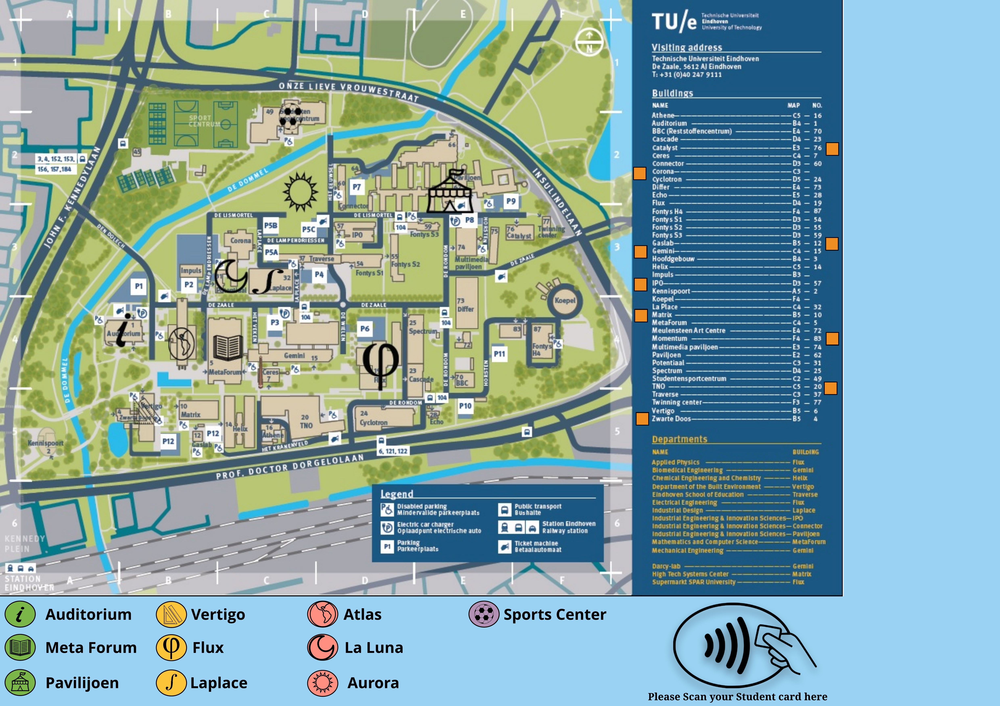
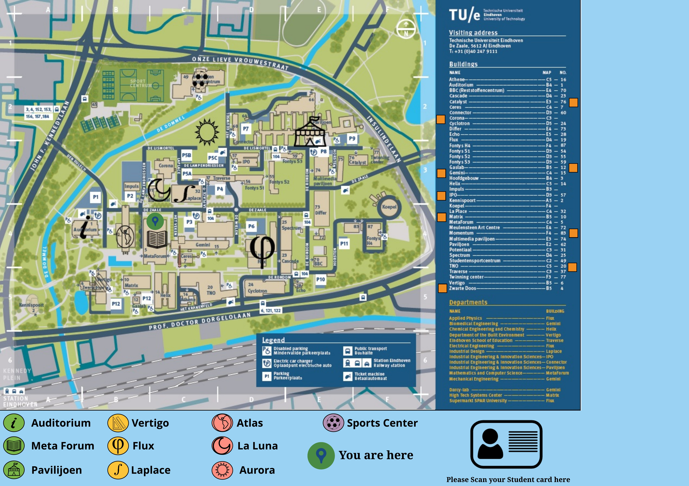
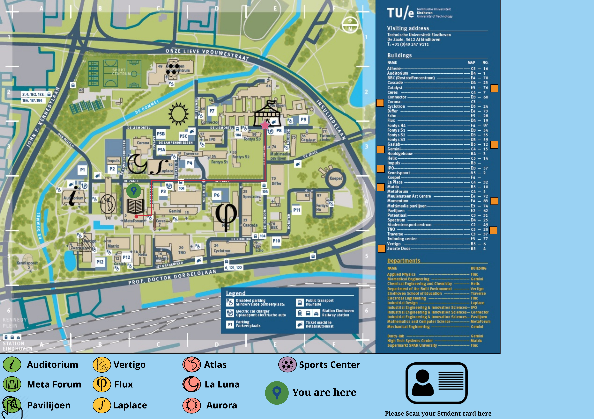

Navigation 2020 TU Eindhoven
Problem Statement
As part of the User Experience Design course, I worked with a team to develop a solution to navigation problems faced by students on the campus of Eindhoven University of Technology.
My Role
I was actively involved in conducting interviews, ideation and conducting evaluation of the prototype.
Persona
This is Yorinde van de Vorst. She is female, 19 years old and majors in Architecture, Urbanism, and Building Sciences. As she is in her first quartile of the first year she only follows the general courses for her bachelor. There are about 250 other students in her courses, but she mostly talks and meets with her project partners and her intro “brothers and sisters” which are in total around 15-20 people.
Semi-structured Interview
In order to get a varied perspective on the navigational problems faced, 18 participants were recruited from the staff and students attending TU Eindhoven. Ages ranged from 17 to 65, with both males and females being interviewed, along with participants from various nationalities. All the participants were selected via personal contact with the authors.
Ideation and Concept Development
To help achieve our vision, we determined certain goals we wanted to achieve. From the data, we gathered that the cognitive map is dependent on the inclusion of landmarks, therefore, our first goal was to include said landmarks in the design, forming the basis of the design.As such, we decided to mentally replace buildings with landmarks, signifying that a building is not associated with the bricks with which it was built, but instead with the landmark it represents. For example, the Atlas building should be associated with a globe or the world, instead of “the building next to the water, between Auditorium and MetaForum”.
 Along with ‘landmarking’ each building, we also chose to include an interactive map within each building that showed the landmarks. A student should easily recognise the building they must go to, taking a route from landmark to landmark. Instead of remembering the route as “200m North, then left, then 2nd street right, etc.”, it will be remembered as “first go to φ, then to the book, then to the globe”. Memorising said landmarks should be easier than remembering which street to turn at and after however many meters.
Along with ‘landmarking’ each building, we also chose to include an interactive map within each building that showed the landmarks. A student should easily recognise the building they must go to, taking a route from landmark to landmark. Instead of remembering the route as “200m North, then left, then 2nd street right, etc.”, it will be remembered as “first go to φ, then to the book, then to the globe”. Memorising said landmarks should be easier than remembering which street to turn at and after however many meters.
Along with ‘landmarking’ each building, we also chose to include an interactive map within each building that showed the landmarks. A student should easily recognise the building they must go to, taking a route from landmark to landmark. Instead of remembering the route as “200m North, then left, then 2nd street right, etc.”, it will be remembered as “first go to φ, then to the book, then to the globe”. Memorising said landmarks should be easier than remembering which street to turn at and after however many meters.
Prototype
The idea behind our prototype was to provoke students to build an efficient cognitive map and nullifying the use of aids to get around the campus (until absolutely necessary).
We have created a prototype which incorporates a map of TU Eindhoven with all the existing legends and old buildings, onto which we have added symbols of the new buildings, rather than updating the map to our requirement. The interactive buttons present the frequently visited buildings, whilst additional buttons have been added to the legend. It is a paper prototype, resembling an interactive screen with the TU/e campus map, along with two ways to interact, either through the use of one’s student identification card or via the touch buttons on the screen. The idea is that the concept is to be placed near the entrance of each building on the TU/e campus.

Interactive Screen 1

Interactive Screen 2 (with Student Card Placed in the Bottom Right Corner)

Interactive Screen 3 (with a User’s Finger Selecting Paviljoen and the Route Shown)
Evaluation of Prototype
For our design, we incorporated the user evaluation and feedback to further improve the prototype. Evaluation by the user consisted of a framework designed to gather their reactions, emotions, and insights. Unlike the initial interviews, we did not have a formal data-analysis method, instead gathering the data in a more casual-manner, looking for the interviewee’s initial reactions and any suggestions for improvement they had.
Click here to read the complete report.